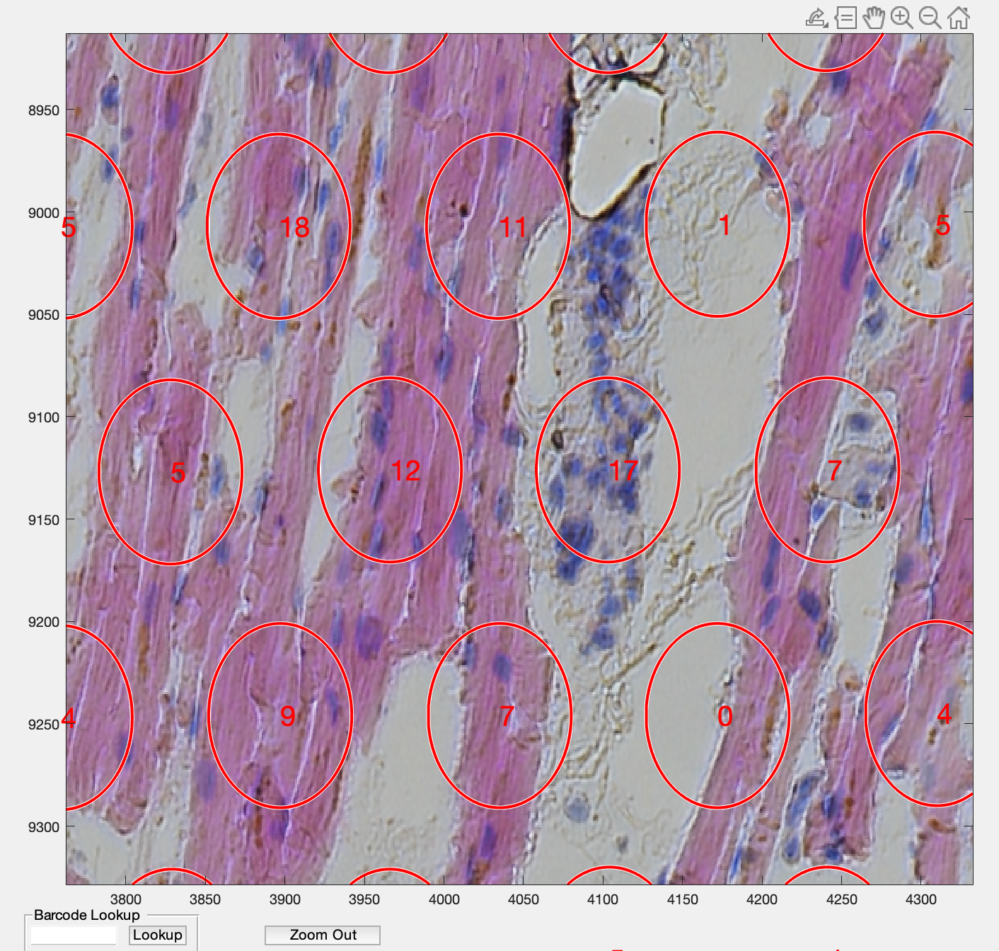
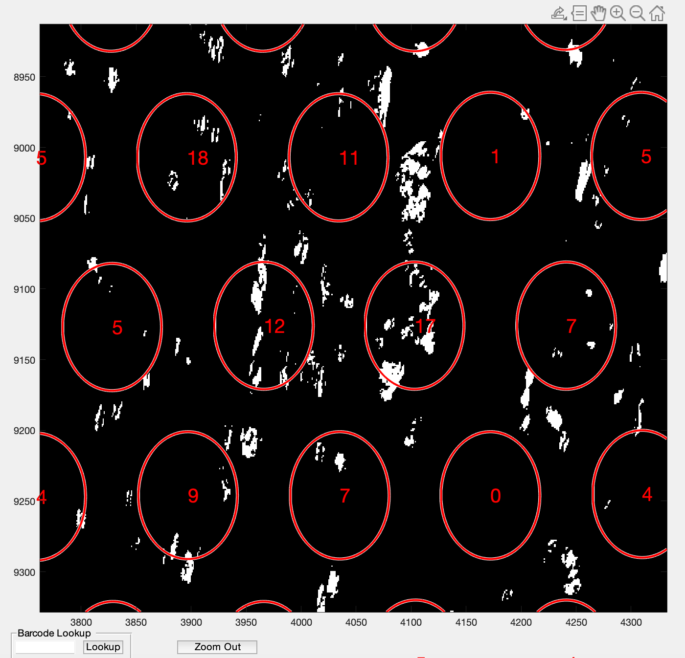
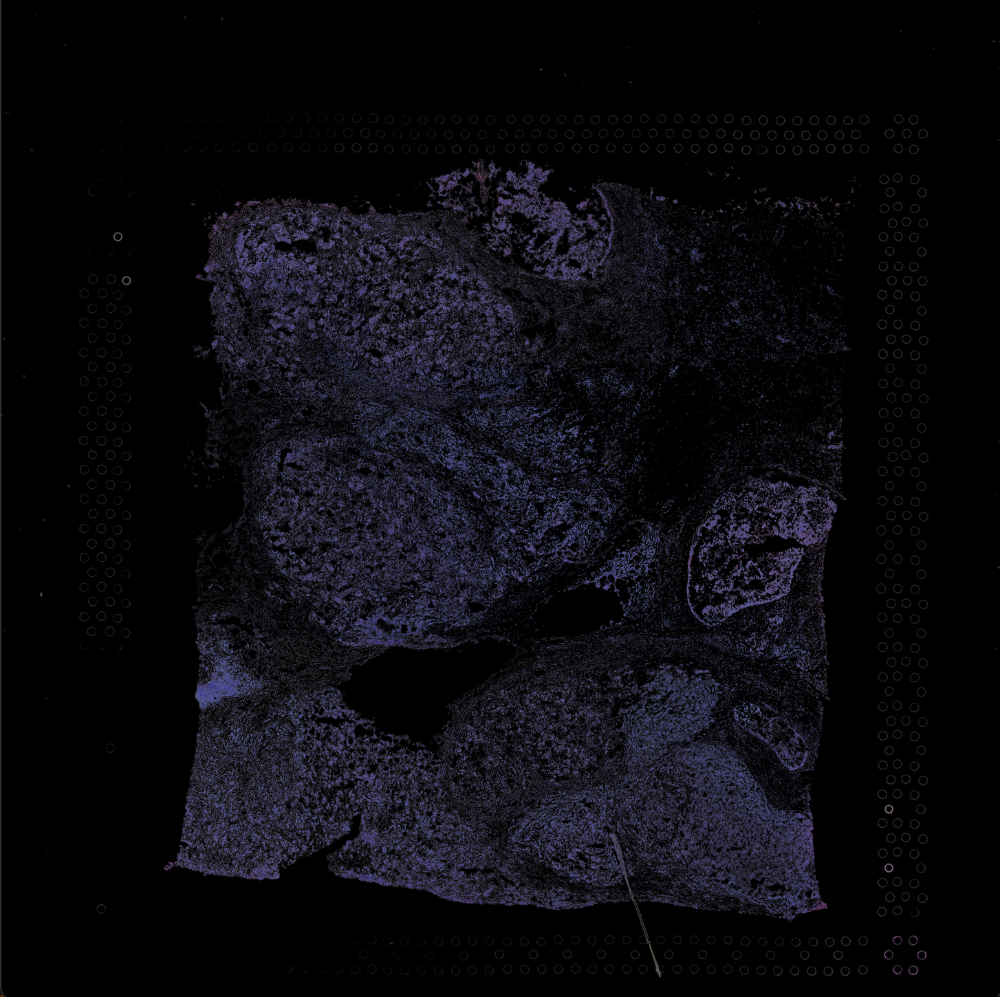
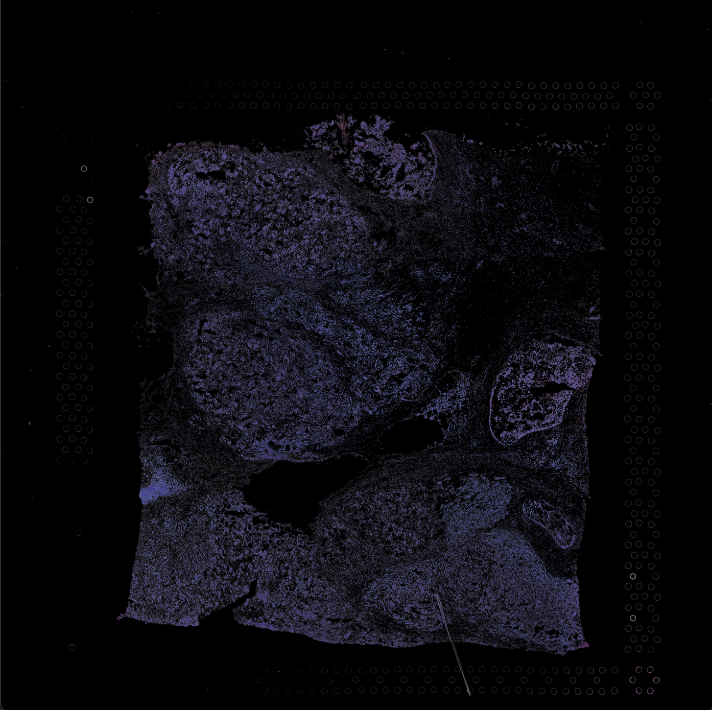

5 Step 5: Test data and future directions
5.1 Public datasets
The pipeline with default settings (smoothening and color clusters of k-means in VNS function) used for in house data has been applied on the public datasets provided by 10x Genomics. To demonstrate the utility of the pipeline on different datasets we chose images obtained from different tissues, breast tissue with high density of cells and human heart tissue with low density of cells. Decent segmentation results were obtained with the default settings on the human heart tissue image given the low image resolution. With the number of color clusters changed from 5 (defalut) to 3 for breast tissue, the highly clustered cells were detected.
A. Heart Tissue
code = '/path to the code/VistoSeg/code';
addpath(genpath(code))
fname = '/path to the file/V1_Human_Heart_image.tif';
N = 5;
VNS(fname,N)
Importing capture area
Elapsed time is 12.898534 seconds.
Performing smoothening and contrast adjustment
Elapsed time is 15.198035 seconds.
Performing rgb to Lab color space conversion
Elapsed time is 17.632075 seconds.
Applying Kmeans
Elapsed time is 277.069572 seconds.
saving outputs
Starting parallel pool (parpool) using the 'local' profile ...
Connected to the parallel pool (number of workers: 2).
Elapsed time is 161.220875 seconds.
M=1;
refineVNS(fname,M)
loading data
Elapsed time is 3.157618 seconds.
refining segmentations
Elapsed time is 36.612378 seconds.
saving final segmentations
Elapsed time is 1.899226 seconds.
spotspotcheck
loading.....
93741 cells detected
4992 spots detected
counting nuclei per spot
100 spots finished in time 32.3861s
200 spots finished in time 61.5043s
300 spots finished in time 98.5936s
400 spots finished in time 141.2028s
500 spots finished in time 182.9503s
600 spots finished in time 222.0649s
700 spots finished in time 263.1166s
800 spots finished in time 303.7525s
900 spots finished in time 343.7924s
.
.
.Zoomed in versions from spotspotcheck are shown below for better visualization.
 
1.Output from spotspotcheck tissue_spot_counts.csv
2.Final nuclei segmentations: nuclei.mat
B. Breast Tissue
code = '/path to the code/VistoSeg/code';
addpath(genpath(code))
fname = '/path to the file/V1_Human_Heart_image.tif';
N = 3;
VNS(fname,N)
Importing capture area
Elapsed time is 42.738974 seconds.
Performing smoothening and contrast adjustment
Elapsed time is 180.821916 seconds.
Performing rgb to Lab color space conversion
Elapsed time is 77.897834 seconds.
Applying Kmeans
Elapsed time is 1909.580117 seconds.
saving outputs
Starting parallel pool (parpool) using the 'local' profile ...
Connected to the parallel pool (number of workers: 2).
Elapsed time is 352.156689 seconds.
M = 1
refineVNS(fname,M)
loading data
Elapsed time is 10.504537 seconds.
refining segmentations
Elapsed time is 229.784656 seconds.
saving final segmentations
Elapsed time is 18.292739 seconds.
mask = '/path to the file/V1_Breast_Cancer_Block_A_Section_1_image_nuclei.mat';
jsonname = '/path to the file/scalefactors_json.json';
posname = '/path to the file/tissue_positions_list.csv';
countNuclei(mask, jsonname, posname)
loading data
Elapsed time is 10.565088 seconds.
576311 cells detected
4992 spots detected
counting nuclei per spot
100 spots finished in time 602.9623s
200 spots finished in time 1305.658s
.
.
.Below images are the raw Histology tif file of breast tissue and the extracted/segmented nuclei.
 

1.Output from spotspotcheck tissue_spot_counts.csv
2.Final nuclei segmentations: nuclei.mat
5.2 Future directions
- Integrate Atlas Aligner for brain region identification
- Integrate VAMPIRE for cell morphology detection